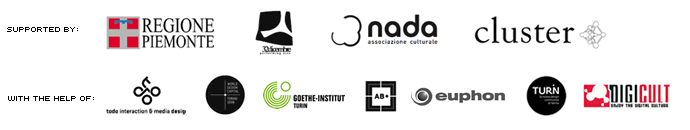

An event devoted to the exploration of the applications of electronic systems in cultural and artistic fields
C.Stem 2007 is over. A bunch of photos on NADA's Flickr
Event's Opening: 29 November 2007, AB+ Club - Torino
Exhibition: 30 November - 2 December 2007, 32 Dicembre Cultural Association - Torino
Conferences: 1 December 2007, AB+ Conference Hall - Torino
After the first edition in 2006, C.Stem is back again, aiming to a further exploration of the applications of electronic systems in cultural and artistic fields.
Thanks to the support given by local institutions and partners, C.stem 2007 is going to present a reasoned selection of artists, works and tools, in order to elaborate on the influence of generative practices in the wider context of arts and graphic design.
C.Stem 2007 will focus on generative systems as a tool as well as medium to draw new conceptual and creative paths, exploring its ongoing and future relations with design, the natural common environment where creativity meets technology.
During the two days following the 29th November's opening party, the festival is going to show a gallery and offer an open lecture cycle with the starring artists.
A three days lectures and exhibitions event, hosted by Progetto Cluster/AB+, 32 Dicembre Cultural Association and NADA Cultural Association.
Opening Party, November 29th at AB+ Club will host the press conference and an A/V performance.
A printed catalogue will be published after the festival, documenting C.Stem 2007 activities and featuring contributions by artists and curators and will be the starting point for 2008 edition, that is going to be part of the official Torino World Design Capital programme.
«Generative art refers to any art practice where the artist uses a system,
such as a set of natural language rules, a computer program, a machine, or
other procedural invention, which is set into motion with some degree of autonomy
contributing to or resulting in a completed work of art.»
Philip Galanter
“To conceptual art, the idea or concept is the most
important aspect of the work.
All planning and decision making is done in advance.
Execution becomes a purely mechanical affair.
The idea becomes a rule that generates the art.”
Sol leWitt, 1967
In general, Generative Art is considered as a stylistic current which produces
mainly abstract, computer-generated artworks.
It is, actually, more correct to widen this definition by considering it as
a strategy for an artistic practice, a certain way of thinking and acting in
realizing an artwork.
This approach opens the way to new expressive possibilities, because it is
possible to add to the artist's sensibility, also a procedural component, which
is able to influence the resulting artwork, in a very surprising way.